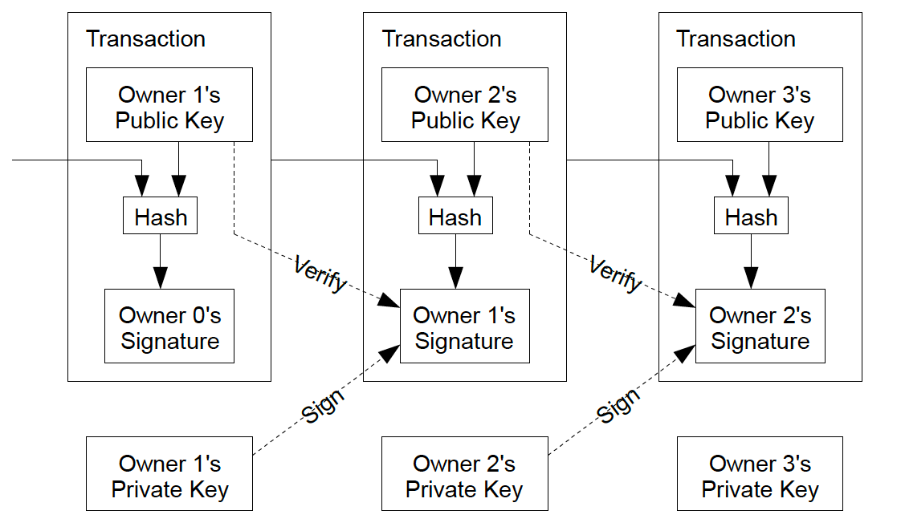
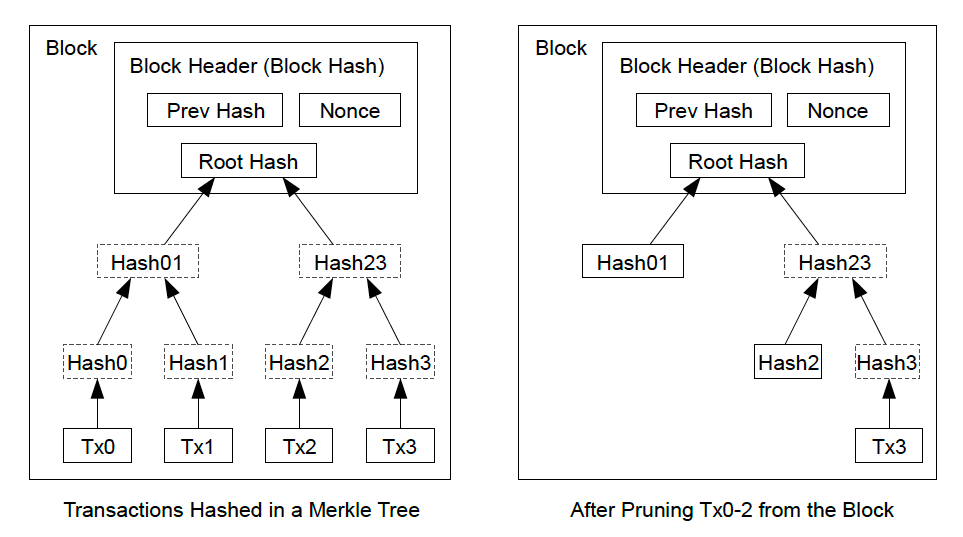
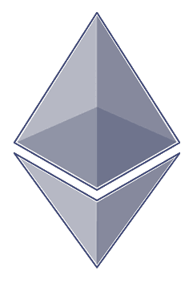
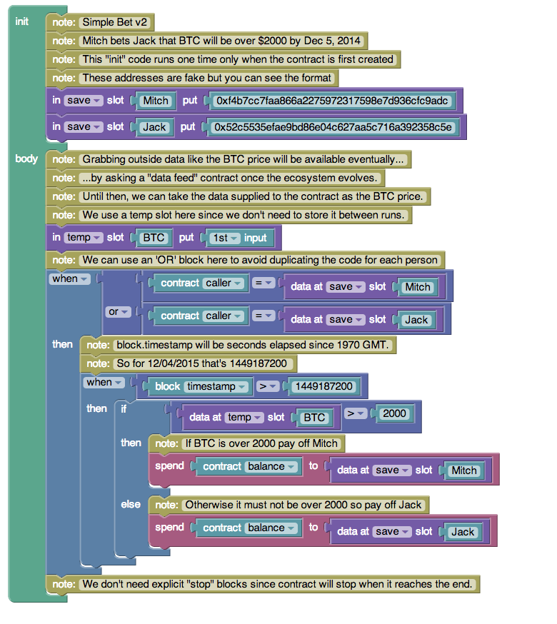
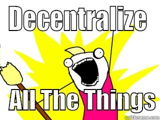

##Bitcoin.js and the Blockchain
###Web 3.0 is here
####By Jeff Ward
####[@jeffscottward](http://www.twitter.com/jeffscottward)
####[@jeffscottward.github.io](http://jeffscottward.github.io)
##Digital Currencies
Digital currencies have been around for a while.
Each is an attempt to use money ***natively*** on the internet, either for general use or for a specific domain.
Otherwise payment processors are necessary for each transaction as a trusted 3rd party for transaction disputes.
## 3rd Party Payment Processors


##Digital Currency Examples


##Main takeaway
These are all forms of centralization of currency and processing to the benefit of the issuing/processing company.
Which means ultimately they can be seized by the government, or hacked by attackers at any point.
Centralization is bad!
##Cryptocurrency Definition
A cryptocurrency is a type of digital token that relies on cryptography for chaining together digital signatures of token transfers through peer-to-peer networking, which is secured by decentralization of consensus and trust.
##Corrections to Video
- MT-GOX was hacked and shut down after losing $500 million.
- Current price is currently about $475
- Top price was $1,200 in November 2013
- The algorithm governing bitcoin has reached the first halving point, so now 25 bitcoins are issued every 10 minutes
- 13+ Million bitcoins have been mined as of today
##What is bitcoin?

- Bitcoin is a crytopgrahiclly secure, binary style, distributed application, for transactions on the web.
- Bitcoin is meant to mimic how BitTorent shares files, but for transaction information, through a Peer-To-Peer network
- TLDR; Email for Money
##Email for Money

 
Much like email, where users would have an address and a password
Bitcoin users have:
- Address (public key)
- Password (private key)
These keys are generated from an Elliptic Curve Digital Signature Algorithm aka ECDSA, that is applied against any large random number that is provided as an input.
##How are transactions secured?

Transactions are secured by hashing the the entirety of a previous transaction with the intended new owners public key and the previous owners private key.
##What is the block chain?

- The blockchain is a public ledger for all bitcoin transactions that have taken place. You can think of this a distributed database.
- Bitcoin "miners" secure the network by collecting transactions around the network and hashing them with timestamps into groups or "blocks".
- Each wallet is required to have a copy of the blockchain (can be provided by a 3rd party API)

- Generate A Large Random Seed Number
- Generate Public & Private Keys
- Create Transactions
- Sign Transactions to Inputs & Outputs
- and Serialize those Transactions
- So essentially BitcoinJS deals with the "Front-End" of Bitcoin
- Bitcoin mining-nodes would be considered "Back-End"
- Small data manipulation library that feels like Underscore
##Bitcoin Based Alternative Currencies


##Bitcoin Nodes in Space!
- Free electricity from solar power for mining
- No laws governing its use
- Futuristic Tax haven (heaven)
##What about Web 3.0?

- Bitcoin is only a binary style application.
- Coins can be spent or unspent. 0's or 1's.
- What if we implemented a programming language on the blockchain that can be evaluated in the virtual environment of any of the transaction mining nodes of the network?
- This is the dream of Ethereum ( and other platforms ).
- Ethereum and others implement "Smart Contracts" or a binding agreements ( just like paper contracts ) that are written in code as an application, and stored on a blockchain. The results of which, are written to the same blockchain.
##Ethereum

##Automation for:
- Insurance Policies
- Last Will and Testament
- Marriage Contracts
- Crowdfunding
- Voter Registration
- Corporate Governance
- Decentralized Dropbox
- Decentralized Stock Exchanges
- Distributed Autonomous Corporations
- SKYNET...
##Ethereum and JavaScript

##THANKS!

See you at the bar!